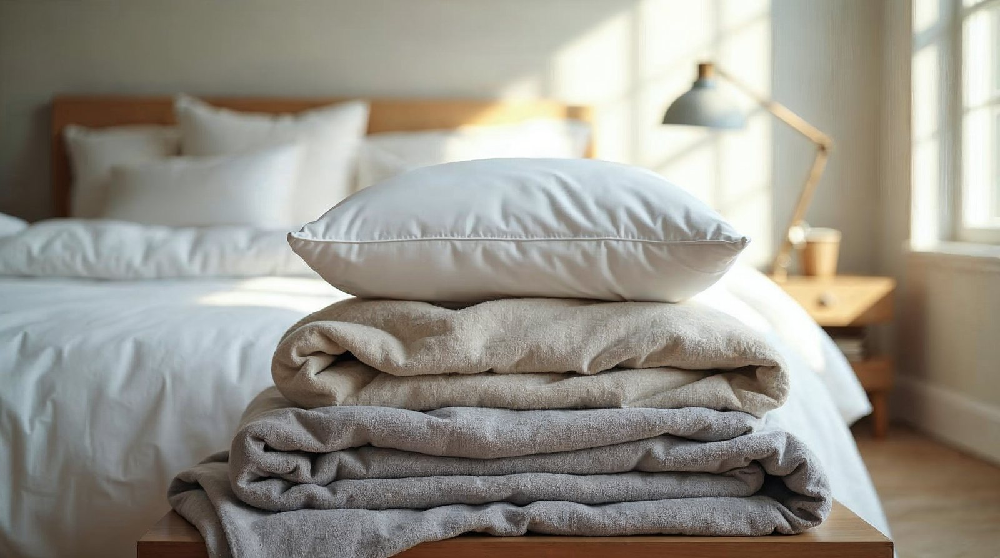
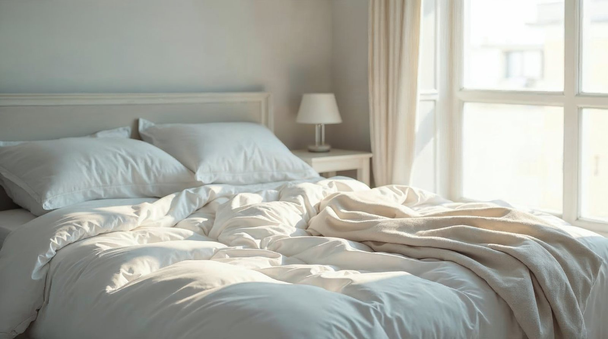
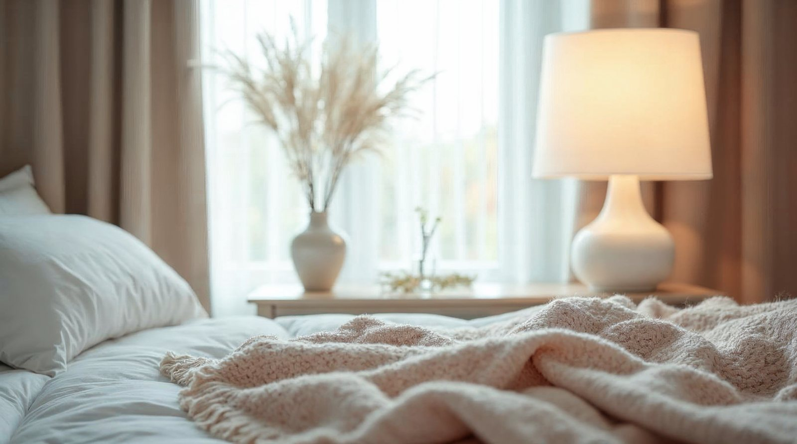
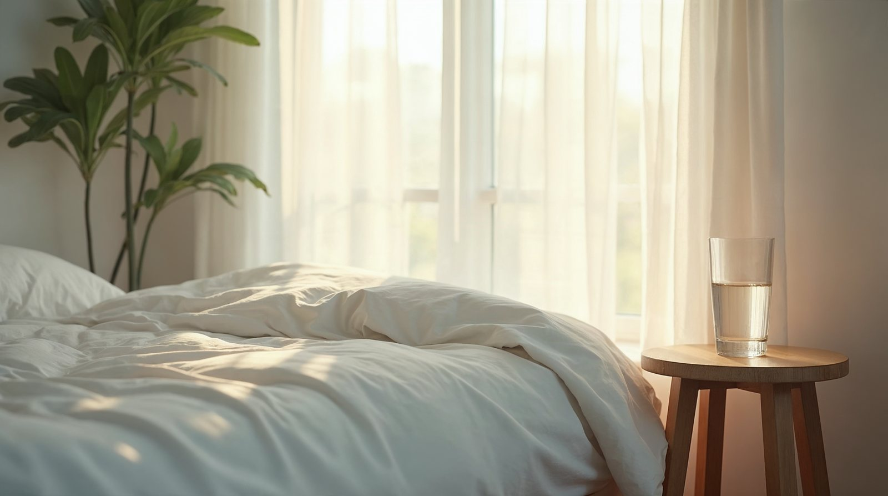
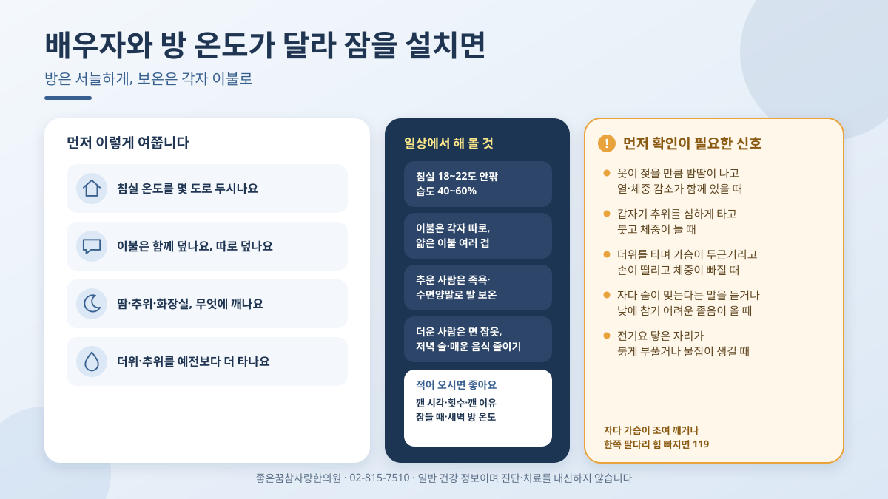

이종호 한의사 감수좋은꿈참사랑한의원 대표원장 (한의사 면허번호 19769)발행 2026-11-27 · 수정 2026-11-27
이 글의 차례
겨울이 되면 침실 보일러 온도를 두고 부부가 작은 신경전을 벌이는 집이 많습니다. 한 사람은 온도를 한참 올려도 손발이 차다며 두꺼운 이불을 끌어당기고, 다른 한 사람은 새벽마다 덥다며 이불을 걷어차고 창문을 살짝 열어 둡니다. 서로 맞춰 주려다 보면 결국 둘 다 자다 깨는 일이 잦아지고, 아침이면 누가 보일러를 껐는지를 두고 말다툼이 이어지기도 합니다.
사람마다 근육량과 체지방, 혈액 순환, 호르몬 상태, 나이, 먹는 약에 따라 편하게 느끼는 온도가 꽤 다르기 때문에, 한 방, 한 이불 안에서 두 사람의 온도를 하나로 맞추기는 쉽지 않습니다.
그래서 방 온도는 더위를 타는 사람에게 맞춰 조금 서늘하게 두고, 추위를 타는 사람은 각자 이불과 잠옷, 수면양말, 발 쪽 보온으로 따뜻함을 더하는 방식을 먼저 권합니다. 이불을 각자 따로 덮는 것만으로도 서로의 뒤척임에 덜 깨는 경우가 많습니다.
다만 한 사람이 밤마다 흠뻑 젖을 만큼 땀을 흘리거나, 예전보다 갑자기 추위를 심하게 타게 되었다면 침실 환경만이 아니라 몸 상태도 함께 살펴보는 것이 좋습니다.
왜 같은 방에서도 한 사람은 덥고 한 사람은 추울까요
- 근육은 몸에서 열을 많이 만드는 곳이라, 근육량이 많은 사람은 같은 온도에서도 덥게 느끼기 쉽고 근육량이 적거나 마른 사람은 추위를 더 탑니다.
- 손발이 찬 사람은 몸속 열을 지키려고 손발 쪽 혈관이 오므라든 상태가 많아, 방이 따뜻해도 발이 차서 잠들기 어려워합니다. 사람은 손발로 열을 내보내며 몸속 온도가 조금 내려갈 때 잠들기 쉬운데, 발이 차면 이 과정이 더디게 진행됩니다.
- 갱년기 무렵에는 열이 확 오르고 땀이 나는 일이 밤에도 생겨, 이불을 덮었다 걷었다 하며 자주 깹니다. 이런 변화는 여성에게 흔하지만 남성도 나이에 따라 열감과 땀을 겪을 수 있습니다.
- 나이가 들면 체온을 조절하는 힘이 둔해져 추위를 더 타는 분이 많고, 갑상선 기능이 떨어지면 추위를, 지나치게 높아지면 더위를 심하게 탈 수 있습니다.
- 혈압약 가운데 일부를 비롯해 몇몇 약은 손발을 차게 느끼게 하거나 땀을 늘릴 수 있습니다. 저녁에 술을 마신 날은 처음에 몸이 달아올라 덥다가 새벽에 식으며 추워 깨기도 합니다.
- 침대 위치도 영향을 줍니다. 창가나 바깥벽 쪽에 눕는 사람은 외풍과 찬 벽 때문에 더 춥고, 안쪽이나 난방 배관이 지나는 쪽은 더 따뜻할 수 있습니다.
- 한 이불을 함께 덮으면 한 사람이 뒤척이거나 이불을 당길 때마다 다른 사람의 이불 속 공기가 바뀌어 잠이 깨기 쉽습니다.
- 한의학에서는 몸의 따뜻한 기운이 부족해 손발과 아랫배가 차고 추위를 타는 모습을 양허로, 몸의 진액이 부족해 밤이 되면 손발바닥과 가슴이 달아오르고 식은땀이 나는 모습을 음허로 설명하기도 합니다. 얼굴과 가슴은 달아오르는데 발은 찬 상열하한도 겨울 침실에서 자주 보이는 모습입니다. 두 사람의 몸이 서로 다른 쪽으로 기울어 있으면 같은 온도에서도 정반대로 느끼게 됩니다.
먼저 이렇게 여쭙니다
- 침실 온도를 대략 몇 도로 두는지, 보일러를 예약이나 타이머로 쓰는지 여쭙니다.
- 두 사람 가운데 누가 덥고 누가 추운지, 밤중 언제쯤 깨는지, 깼을 때 무엇을 하는지(이불을 걷는지, 보일러를 만지는지) 여쭙니다.
- 이불을 함께 덮는지 따로 덮는지, 이불 두께와 전기요나 온수매트 사용 여부를 여쭙니다.
- 땀이 나서 깨는지, 추워서 깨는지, 화장실 때문에 깨는지 여쭙니다.
- 열감과 땀이 언제부터 생겼는지, 낮에도 얼굴이 달아오르는지, 생리 주기 변화가 있는지 여쭙니다.
- 손발이 찬 정도, 추위를 예전보다 더 타게 되었는지, 체중 변화와 붓기가 있는지 여쭙니다.
- 저녁 술, 늦은 식사, 운동 시각, 복용 중인 약을 여쭙니다.
- 코골이나 자다가 숨이 멎는다는 말을 들은 적이 있는지도 함께 여쭙니다.

일상에서 먼저 해 볼 수 있는 것
방 온도와 습도 기준 정하기
- 침실 온도는 흔히 18~22도 안팎, 습도는 40~60%를 무난한 범위로 이야기합니다. 두 사람이 다르게 느낀다면 더위를 타는 사람에게 맞춰 그 범위의 서늘한 쪽에 두고, 추위를 타는 사람은 몸에 직접 닿는 보온을 늘리는 쪽이 서로 덜 깹니다.
- 방에 온습도계를 두고 잠들 때와 새벽에 깼을 때 숫자를 한 번씩 봅니다. 느낌 대신 숫자를 기준으로 삼으면 다툼이 줄어듭니다.
- 보일러는 밤새 온도를 크게 오르내리게 하기보다 일정하게 두는 편이 덜 깹니다. 새벽에 방이 식으며 추운 사람이 깬다면, 꺼지는 예약보다 낮은 온도로 유지하는 쪽을 시험해 봅니다.
- 건조하면 젖은 수건을 널거나 가습기를 쓰되, 가습기는 매일 물을 갈고 자주 씻어 둡니다.
이불은 각자, 두께는 따로
- 한 이불을 같이 덮기보다 각자 자기 이불을 덮어 봅니다. 추위를 타는 사람은 두꺼운 솜이불이나 이불 두 겹을, 더위를 타는 사람은 얇은 이불 한 장을 씁니다. 침대 하나에 이불 두 장이 처음엔 어색해도, 서로의 뒤척임에 덜 깨는 장점이 있습니다.
- 이불은 두꺼운 한 장보다 얇은 이불 여러 겹이 조절하기 쉽습니다. 더울 때 한 겹만 걷어 내면 됩니다.
추위를 타는 사람
- 잠들기 1~2시간 전 미지근한 물로 샤워하거나 10~15분 족욕을 해 발을 데웁니다.
- 발목을 조이지 않는 넉넉한 수면양말을 신고, 잠든 뒤 발이 더워지면 벗을 수 있게 합니다.
- 전기요나 온수매트는 자기 쪽에만 깔고, 잠들기 30분 전에 미리 데운 뒤 잠들 때는 가장 낮은 단계로 줄이거나 타이머를 맞춥니다. 같은 자리에 오래 닿으면 낮은 온도에도 화상을 입을 수 있어, 감각이 둔하거나 당뇨가 있는 분은 특히 조심합니다.
- 창가나 바깥벽 쪽 자리라면 자리를 바꾸거나, 침대를 벽에서 조금 떼고 커튼을 두껍게 칩니다.
- 목과 어깨가 시리면 목까지 덮이는 잠옷을 입거나 어깨 위에 얇은 담요를 한 장 더 덮습니다.
더위를 타는 사람
- 땀을 잘 흡수하는 면 잠옷을 입고, 두꺼운 기모 잠옷은 피합니다. 머리맡에 갈아입을 잠옷과 수건을 둡니다.
- 저녁 술과 맵고 뜨거운 음식, 잠들기 직전 운동은 밤의 열감을 키울 수 있어 줄입니다.
- 베개 커버를 얇은 면으로 바꾸고, 메밀이나 통기성이 있는 베개를 써 봅니다.
- 열감이 올라 깨면 이불을 걷어차기보다 한 겹만 걷고, 발을 이불 밖으로 잠시 내놓습니다.
두 사람이 함께 정하기
- 낮에 차분할 때 서로 덥고 추운 정도를 0~10으로 말해 보고, 일주일 동안 한 가지 방법만 바꿔 시험해 봅니다.
- 잠드는 시각이 다르다면 늦게 자는 사람이 들어올 때 조명과 문소리를 줄이기로 약속합니다.
- 몇 주 시도해도 둘 다 계속 깬다면, 평일에는 각자 다른 방에서 자고 주말에 함께 자는 방법도 있습니다. 잠을 따로 자는 것이 사이가 멀어졌다는 뜻은 아니며, 서로 잘 자고 낮에 더 편하게 지내기 위한 선택일 수 있습니다.

상황별 예시
- 예를 들어 맞벌이 부부 가운데 한 사람은 손발이 차서 보일러를 높이고, 다른 한 사람은 새벽마다 덥다며 창문을 열어 두는 바람에 둘 다 서너 번씩 깨는 경우, 방 온도를 20도 안팎으로 두고 이불을 각자 따로 덮으며, 추위를 타는 쪽은 수면양말과 자기 쪽 전기요를 타이머로 쓰는 방법을 일주일 시험해 봅니다.
- 예를 들어 50대 초반에 밤마다 열이 확 오르며 땀에 젖어 깨는 사람과 추위를 많이 타는 배우자가 같은 이불을 덮고 있는 경우, 이불을 나누고 땀이 나는 쪽은 얇은 이불과 면 잠옷, 머리맡 갈아입을 옷을 준비합니다. 열감과 땀이 잦아 일상이 힘들다면 갱년기 변화를 함께 살펴보는 상담을 받아 봅니다.
- 예를 들어 상도동 언덕 위 오래된 주택에서 창가 쪽에 눕는 사람이 외풍 때문에 새벽마다 어깨가 시려 깨고, 안쪽 자리 배우자는 방이 덥다고 느끼는 경우, 잠자리 위치를 바꾸거나 침대를 바깥벽에서 조금 떼고, 창문에 두꺼운 커튼과 문풍지를 더해 봅니다.
- 예를 들어 요즘 들어 한 사람이 예전보다 부쩍 추위를 타고, 몸이 붓고 체중이 늘며 쉽게 피곤해진 경우에는 침실 온도보다 갑상선 기능 같은 몸 상태를 먼저 확인해 보시길 권합니다.
자주 하는 오해
- 방을 따뜻하게 할수록 잠이 잘 온다고 여기기 쉽지만, 너무 더운 방에서는 몸속 온도가 잘 내려가지 않아 잠이 얕아지고 새벽에 땀이 나 깨기 쉽습니다.
- 추위를 타는 사람에게는 방 온도를 높여 주는 것만이 방법이라고 생각하기도 합니다. 실제로는 발과 목처럼 몸에 직접 닿는 보온을 더하는 쪽이 두 사람 모두에게 편한 경우가 많습니다.
- 부부가 이불을 따로 덮거나 방을 따로 쓰면 사이가 나빠진다고 걱정하는 분이 있습니다. 서로 잘 자는 것이 낮의 대화와 기분에도 이어지므로, 어떤 방식이 둘에게 편한지를 기준으로 정하면 됩니다.
- 밤에 땀이 나는 것은 이불이 두꺼워서일 뿐이라고 넘기기 쉽지만, 얇게 덮어도 흠뻑 젖는 땀이 계속되면 몸 상태를 확인해 봅니다.
- 전기요는 켜 두고 자야 따뜻하다고 여기기 쉬운데, 밤새 높은 온도로 켜 두면 몸이 달아 깨거나 피부가 건조해지고 낮은 온도 화상의 위험도 있습니다.
스스로 점검해 보세요
- 침실 온도를 두고 배우자와 자주 다툰다.
- 한 이불을 같이 덮고, 배우자가 뒤척이거나 이불을 당길 때 깬다.
- 침실에 온습도계가 없어 몇 도인지 모른다.
- 발이 차서 잠들기까지 30분 넘게 걸린다.
- 새벽에 땀에 젖어 깨거나 이불을 걷어찬다.
- 전기요나 온수매트를 밤새 높은 온도로 켜 둔다.
- 예전보다 추위나 더위를 유난히 더 타게 되었다.

한의원에서 함께 살필 수 있는 경우
- 침실 환경을 바꿔도 손발이 차서 잠들기 어려운 날이 이어지는 경우
- 밤마다 열이 오르고 땀이 나 자주 깨며 낮에도 얼굴이 달아오르는 경우
- 위는 덥고 아래는 찬 느낌, 가슴 답답함, 입마름이 함께 있는 경우
- 부부가 함께 잠과 생활 리듬을 정리해 보고 싶은 경우
좋은꿈참사랑한의원에서는 첫 방문 때 침실 온도와 이불, 잠드는 시각과 깨는 시각, 깨는 이유를 먼저 차례로 여쭙고, 낮의 피로와 식사, 대소변, 생리 주기나 갱년기 변화, 복용 중인 약도 함께 정리합니다. 그다음 맥부터 짚어 보고, 혀의 색과 설태, 배를 살펴 아랫배가 찬지, 가슴과 명치에 열이 몰려 있는지 확인하며, 손발과 얼굴의 온도 차도 함께 봅니다.
그 결과를 바탕으로 몸이 차서 깨는 쪽인지, 열이 올라 깨는 쪽인지 나눠 생활에서 바꿀 것을 함께 정하고, 필요하면 침이나 뜸, 한약을 상의합니다. 두 분이 함께 오시면 서로의 잠 습관을 나란히 놓고 이야기하기 쉬워집니다. 갑상선 기능이나 갱년기 호르몬처럼 다른 검사가 필요해 보이면 해당 진료를 먼저 권해 드립니다.
다음 진료에서는 지난번 정한 방법을 해 보신 기록을 이어서 보며 깨는 횟수와 시간을 함께 확인합니다.

얼마나 지켜보고 언제 상담할까요
- 방 온도와 이불, 보온 방법을 한 번에 하나씩 바꾸며 일주일씩 시험하고, 깨는 횟수를 기록합니다.
- 2~3주 동안 여러 방법을 해 봐도 일주일에 세 번 넘게 잠들기 어렵거나 깨는 날이 이어지면 상담을 받아 보세요.
- 열감과 땀, 추위 타는 변화가 새로 생겨 한 달 넘게 이어진다면 몸 상태를 확인해 봅니다.
- 진료 시간은 평일 09:30~20:00(점심 13:00~14:00), 토·일·공휴일 09:30~15:00(점심시간 없음)이라 두 분이 퇴근 뒤나 주말에 함께 오셔도 됩니다. 접수 마감 시각은 방문 전 전화로 확인해 주세요.
- 아래 신호가 있으면 지켜보지 말고 진료를 먼저 받습니다.
이렇게 기록해 오시면 상담이 쉬워집니다
- 일주일 동안 잠든 시각, 깬 시각과 횟수, 깬 이유(더위, 추위, 땀, 소변, 배우자 뒤척임)
- 잠들 때와 새벽의 침실 온도와 습도
- 이불 종류와 두께, 전기요·온수매트 사용 시간과 단계
- 저녁 식사 시각, 술, 운동 시각
- 열감이나 식은땀이 나는 시각과 부위, 생리 주기 변화
- 복용 중인 약과 최근 검진 결과(갑상선 검사가 있다면 함께)
이런 증상은 먼저 확인이 필요합니다
- 이불을 얇게 덮어도 밤마다 옷과 이불이 젖을 만큼 땀이 나고, 열이나 이유 없는 체중 감소가 함께 있는 경우
- 갑자기 추위를 심하게 타고 몸이 붓고 체중이 늘며, 피부가 건조하고 변비가 생긴 경우
- 스스로를 해칠 생각이 들면 ☎ 109로 바로 연락하세요.
이런 신호가 있으면 한의원보다 가까운 병원이나 응급실을 먼저 찾으세요.
관련 글

여쭙는 것
- 침실 온도를 대략 몇 도로 두는지, 보일러를 예약이나 타이머로 쓰는지 여쭙니다.
- 두 사람 가운데 누가 덥고 누가 추운지, 밤중 언제쯤 깨는지, 깼을 때 무엇을 하는…
- 이불을 함께 덮는지 따로 덮는지, 이불 두께와 전기요나 온수매트 사용 여부를 여쭙니다.
생활에서 해 볼 것
- 침실 온도는 흔히 18~22도 안팎, 습도는 40~60%를 무난한 범위로 이야기합니…
- 방에 온습도계를 두고 잠들 때와 새벽에 깼을 때 숫자를 한 번씩 봅니다. 느낌 대신…
- 보일러는 밤새 온도를 크게 오르내리게 하기보다 일정하게 두는 편이 덜 깹니다. 새벽…
한의원에서 함께 살필 것
- 침실 환경을 바꿔도 손발이 차서 잠들기 어려운 날이 이어지는 경우
- 밤마다 열이 오르고 땀이 나 자주 깨며 낮에도 얼굴이 달아오르는 경우
- 위는 덥고 아래는 찬 느낌, 가슴 답답함, 입마름이 함께 있는 경우
먼저 확인이 필요한 신호
- 이불을 얇게 덮어도 밤마다 옷과 이불이 젖을 만큼 땀이 나고, 열이나 이유 없는 체…
- 갑자기 추위를 심하게 타고 몸이 붓고 체중이 늘며, 피부가 건조하고 변비가 생긴 경우
- 스스로를 해칠 생각이 들면 109로 바로 연락하세요.
한눈에 보는 표
| 구분 | 핵심 |
|---|---|
| 여쭙는 것 | 침실 온도를 대략 몇 도로 두는지, 보일러를 예약이나 타이머로 쓰는지 여쭙니다. 두 사람 가운데 누가 덥고 누가 추운지, 밤중 언제쯤 깨는지, 깼을 때 무엇을 하는지(이불을 걷는지, 보일러를 만지는지) 여쭙니다. |
| 생활에서 해 볼 것 | 침실 온도는 흔히 18~22도 안팎, 습도는 40~60%를 무난한 범위로 이야기합니다. 두 사람이 다르게 느낀다면 더위를 타는 사람에게 맞춰 그 범위의 서늘한 쪽에 두고, 추위를 타는 사람은 몸에 직접 닿는 보온을 늘리는 쪽이 서로 덜 깹니다. 방에 온습도계를 두고 잠들 때와 새벽에 깼을 때 숫자를 한 번씩 봅니다. 느낌 대신 숫자를 기준으로 삼으면 다툼이 줄어듭니다. |
| 한의원에서 함께 살필 것 | 침실 환경을 바꿔도 손발이 차서 잠들기 어려운 날이 이어지는 경우 밤마다 열이 오르고 땀이 나 자주 깨며 낮에도 얼굴이 달아오르는 경우 |
| 먼저 확인이 필요한 신호 | 이불을 얇게 덮어도 밤마다 옷과 이불이 젖을 만큼 땀이 나고, 열이나 이유 없는 체중 감소가 함께 있는 경우 갑자기 추위를 심하게 타고 몸이 붓고 체중이 늘며, 피부가 건조하고 변비가 생긴 경우 |
자주 묻는 질문
겨울 침실은 몇 도가 적당한가요?
흔히 18~22도 안팎, 습도 40~60%를 무난한 범위로 봅니다. 다만 사람마다 편한 온도가 달라, 방은 그 범위에서 조금 서늘하게 두고 추위를 타는 사람은 이불과 잠옷, 양말로 보온을 더하는 방식을 권합니다.
수면양말을 신고 자도 괜찮나요?
발이 차서 잠들기 어려운 분에게는 도움이 될 수 있습니다. 발목을 조이지 않는 넉넉한 양말을 고르고, 잠든 뒤 발이 더워지거나 땀이 나면 벗어도 됩니다.
부부가 이불을 따로 덮으면 어색하지 않을까요?
처음에는 어색할 수 있지만, 서로의 뒤척임과 온도 차이에 덜 깨는 장점이 있습니다. 일주일쯤 시험해 보고 두 사람의 잠이 어떻게 달라지는지 기록해 보세요.
전기요를 밤새 켜 두면 안 되나요?
밤새 높은 온도로 켜 두면 몸이 달아 깨거나 피부가 건조해지고, 같은 자리에 오래 닿아 낮은 온도에도 화상을 입을 수 있습니다. 잠들기 전에 미리 데우고, 잠들 때는 가장 낮은 단계로 줄이거나 타이머를 맞추세요.
밤에 열이 오르는 것도 한의원에서 상담할 수 있나요?
열감이 오르는 시각과 땀, 잠, 생리 주기 변화 등을 함께 여쭙고 맥과 혀, 배를 살펴 상의할 수 있습니다. 체중 감소나 열이 함께 있거나 호르몬 검사가 필요해 보이면 해당 진료를 먼저 안내해 드립니다.
좋은꿈참사랑한의원은 재진 때 지난번 이야기부터 이어서 여쭙니다. 진료시간과 예약은 오시는 길에서 확인하세요.
어디서 상담받을 수 있나요?
좋은꿈참사랑한의원은 서울 동작구 만양로2길 2 신성빌딩 3층·5층(서울 동작구 상도동, 7호선 상도역 3번 출구 근처)에 있습니다. 한의사 3명(이종호 대표원장, 조영기 수석진료원장, 정원영 진료원장)이 진료합니다. 진료시간은 평일 09:30~20:00(점심 13:00~14:00), 토·일·공휴일 09:30~15:00이며, 방문 전 전화로 확인을 권합니다. 예약은 네이버 예약, 카카오톡 상담, 전화 02-815-7510로 받습니다.
이 글은 일반적인 건강 정보이며 개인의 진단이나 치료를 대신하지 않습니다. 증상이 있거나 복용 중인 약이 있다면 진료를 통해 확인하세요. 치료 효과는 개인마다 다를 수 있습니다.
작성 기준: 일반적으로 알려져 있는 건강 정보를 참고해 정리했습니다(대표원장 감수). 증상 기록은 1~2주 동안 하루 1회, 비슷한 시간에 적어 오시면 지난 상태와 비교하기 쉽습니다.